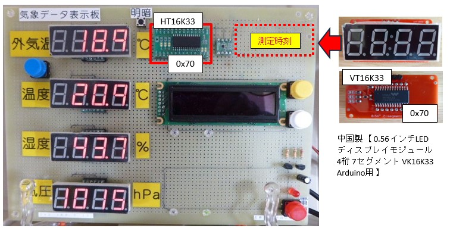

２つの同一種 i2cデバイス (HT16K33 モジュール)を共存させる
【最終更新日】2022-10-04
既存のHT16K33モジュール(左側)に中国製【0.56インチ LEDディスプレイモジュール 4桁 7セグメント VK16K33 I2C Arduino用】を共存させるにはいずれか一方のデバイスのスレーブアドレスを変更する必要があります。

気象データ表示板に組み込んだHTK1633モジュールは秋月電子の【AE-HT16K33 16x8マトリクスドライバモジュール】。
そして秋月電子からダウンロードした資料(PDF)がこれ。
そして秋月電子からダウンロードした資料(PDF)がこれ。
赤枠で括られた３つの端子の組み合わせでハンダを盛るとスレーブアドレスを0x71〜0x76に変更可能であることを表しています。

気象データ表示板のスレーブアドレスを変更するとすでに運用している制御プログラムを修正する必要があるため避けたかったのですが、中国製モジュールのデータシートが入手できなかったので今回は下記右側のように気象データ表示板のHT61K33モジュールのスレーブアドレスを "0x71" に変更することにしました。

実際に中国製7セグ4桁LEDモジュール (コロン付き) を気象データ表示板に組み込み、データの到着時刻(測定時刻)を出力したのがこれ。
コンソールからi2cデバイスのスレーブアドレスを確認。同種のI2Cデバイスのスレーブアドレスが想定通りに２つ表示されています。
複数のI2Cデバイスを連結する方法については下記書籍に記載されているのでご覧になってください。
電子部品ごとの制御を学べる！ Ｒａｓｂｅｒｒｙ Ｐｉ 電子工作 実践講座 改訂第２版 [ISBN978-4-8007-1242-4] 【2-5】デジタル通信方式(1) - I2C通信方式 -- 51ページ目
気象データ表示板の製作についてはこちら
https://github.com/pipito-yukio/home_weather_sensors/tree/master/raspi_zero
https://github.com/pipito-yukio/home_weather_sensors/tree/master/raspi_zero
気象データ表示板の制御プログラムのソースはこちら
- lib/ht16k33.py: HT16K33 モジュールの制御クラス
- lib/led4digit7seg.py: 4つの7セグ4桁LEDの出力を制御するクラス
- lib/timeled7seg.py: 時刻の出力を制御するクラス
- UDPClientFromWeatherSensor.py: 気象データ表示板の制御プログラム本体